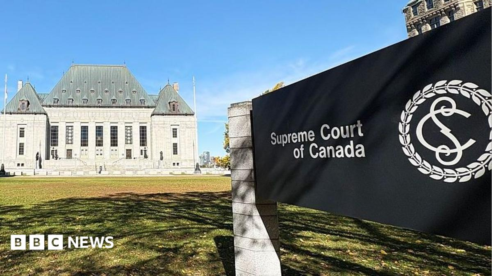

World · 28 Nov 2026
Canada's top court largely upholds Quebec ban on religious symbols for public servants

The law faced legal challenges from a range of groups, including female Muslim, Sikh and Catholic teachers, who argued it violated their fundamental rights.
Multiple independent publishers are reporting on the same development: Canada's top court largely upholds Quebec ban on religious symbols for public servants.
The available reports place the development in the World category. The accounts were compared for agreement on the central event rather than simply shared names or broad topics.
One of the available reports describes the development this way: The law faced legal challenges from a range of groups, including female Muslim, Sikh and Catholic teachers, who argued it violated their fundamental rights.
Readers should consult the linked source reports for additional context, updates and details that may change as the story develops.
Sources
This article was produced by the C. O. Eric AI Newsroom from the cited sources. It is published only after automated evidence and safety checks.